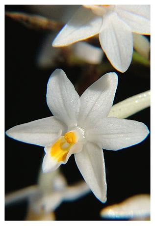
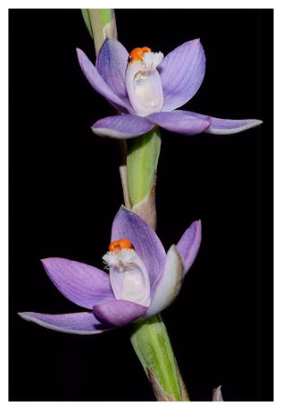
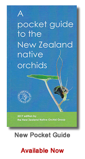

|  |
New Zealand has over 160 species of Native Orchid Many species are illustrated and described in the Identification Section along with many variants yet to be formally decribed. NZ orchids possess small, delicate, exquisite flowers which come in a variety of colours and forms. |
|
|||
|  |
This site provides descriptions & photos of most of the recognised species, along guides on where to find them, their flowering times and habitats. Found from the coastline to the alpine herb-fields, these shy plants are a much overlooked part of the New Zealand Native Flora. |

|
|||
|
The society has produced many publications including a quarterly journal JOIN the society and meet local people with a common interest to share local trips to places they know well. |